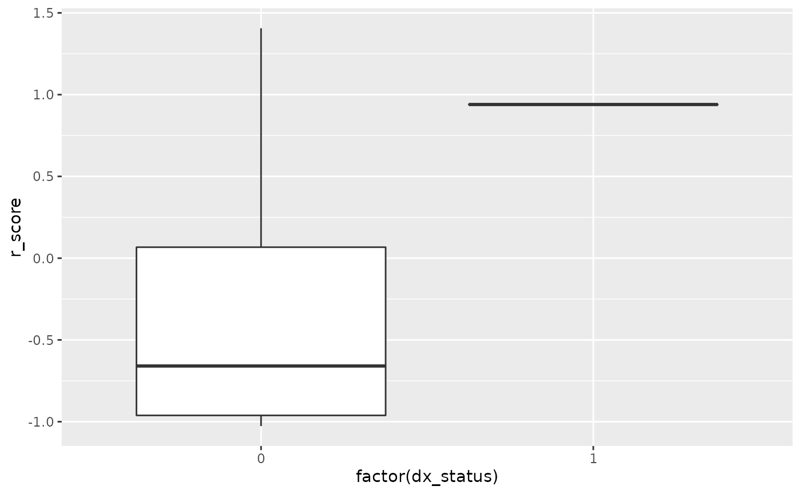

library('phers')
library('data.table')
library('iterators')
library('ggplot2')
# doParallel::registerDoParallel() # register a parallel backend to minimize runtime
demoSample = data.table(
person_id = 1:5,
sex = c('F', 'M', 'M', 'F', 'F'))
icdSample = data.table(
person_id = c(rep(1L, 3), rep(2L, 4), rep(3L, 2), 4),
icd = c('365', '366', '734', '759.82', '524.0', '718.4', '441', '366', '734', '441'),
flag = 9)
set.seed(1)
npop = 5
gene1 = 'FBN1'
nvar = uniqueN(geneVarMap[gene == gene1]$vid)
genoSample = data.table(person_id = 1:npop)
genos = replicate(
nvar, sample(c(0, 1, 2), replace = TRUE, size = npop, prob = c(80, 15, 5)))
colnames(genos) = unique(geneVarMap[gene == gene1]$vid)
genos = as.data.table(genos)
genoSample = cbind(genoSample, genos)
# map ICD codes to phecodes
phecodeOccurrences = getPhecodeOccurrences(icdSample)
# calculate weights
weights = getWeights(demoSample, phecodeOccurrences)
# vector of OMIM disease IDs to calculate PheRS for
diseaseIds = 154700
# mape diseases to phecodes
diseasePhecodeMap = mapDiseaseToPhecode()
# calculate PheRS
scores = getScores(
demoSample, phecodeOccurrences, weights, diseasePhecodeMap[disease_id == diseaseIds])
# calculate residual PheRS
rscores = getResidualScores(demoSample, scores, glmFormula = as.formula(~ sex))
# calculate PheRS using pre-calculated weights
pWeights = getWeights(demoSample, phecodeOccurrences, preCalcWeights = TRUE)
scores = getScores(
demoSample, phecodeOccurrences, pWeights, diseasePhecodeMap[disease_id == diseaseIds])perform genotype association
demos = demoSample[, .(person_id, sex)]
diseaseVariantMap = merge(
diseaseInfo[disease_id %in% unique(scores$disease_id)], geneVarMap,
by = 'gene')[, .(disease_id, gene, vid)]
genoStats = getGeneticAssociations(
scores, genoSample, demos, diseaseVariantMap, glmFormula = as.formula(~ sex),
modelType = 'additive')
genoStats = merge(geneVarMap[, .(gene, vid)], genoStats, by = 'vid')
genoStats
#> vid gene disease_id n_total n_wt n_het n_hom beta
#> 1: 15:48703179:A:G FBN1 154700 5 4 1 0 -0.6461531
#> 2: 15:48703187:T:C FBN1 154700 5 3 2 0 4.1360425
#> 3: 15:48703252:T:C FBN1 154700 5 4 0 1 -1.7751742
#> 4: 15:48703260:T:G FBN1 154700 5 4 1 0 4.5753131
#> 5: 15:48703261:T:C FBN1 154700 5 4 1 0 -0.6461531
#> ---
#> 567: 15:48936888:C:T FBN1 154700 5 3 2 0 -1.8908082
#> 568: 15:48936891:C:G FBN1 154700 5 4 1 0 -0.6461531
#> 569: 15:48936892:C:T FBN1 154700 5 4 1 0 -3.5503484
#> 570: 15:48936908:T:C FBN1 154700 5 4 1 0 3.5503484
#> 571: 15:48936913:C:G FBN1 154700 5 4 1 0 -3.9291599
#> se pval lower upper
#> 1: 4.096487 0.88915293 -8.6751208 7.382815
#> 2: 1.074769 0.06137359 2.0295343 6.242551
#> 3: 2.021806 0.47253900 -5.7378414 2.187493
#> 4: 2.554060 0.21510860 -0.4305518 9.581178
#> 5: 4.096487 0.88915293 -8.6751208 7.382815
#> ---
#> 567: 2.814422 0.57090321 -7.4069749 3.625358
#> 568: 4.096487 0.88915293 -8.6751208 7.382815
#> 569: 4.043612 0.47253900 -11.4756829 4.374986
#> 570: 4.043612 0.47253900 -4.3749862 11.475683
#> 571: 3.044802 0.32595567 -9.8968614 2.038542run positive control analysis
dxStatus = getDxStatus(demoSample, icdSample)
plotInput = merge(rscores, dxStatus, by = c('person_id', 'disease_id'))
ggplot(plotInput) + geom_boxplot(aes(x = factor(dx_status), y = r_score))